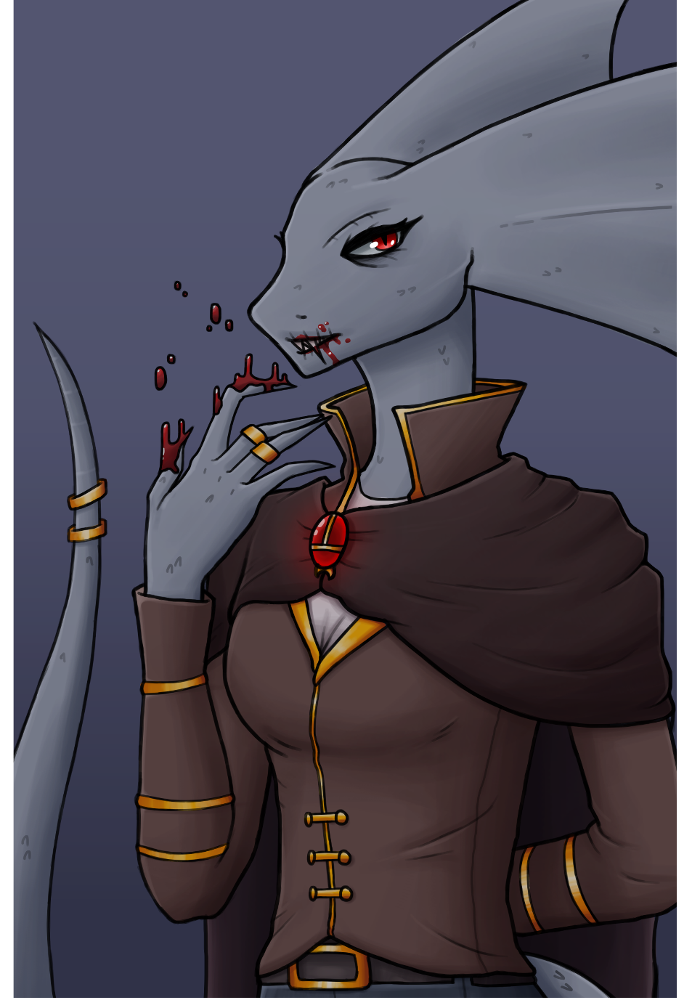
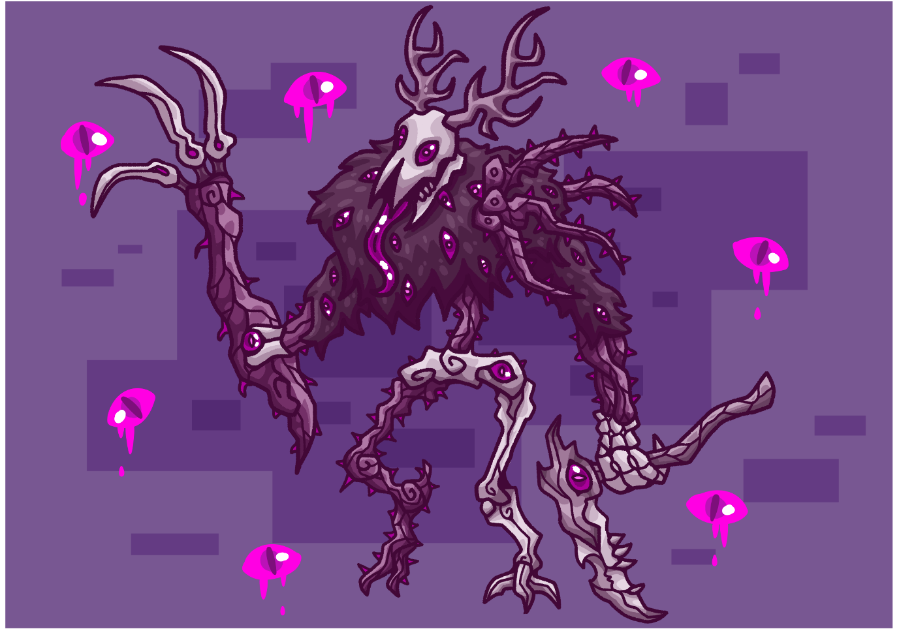

Dizajnovi i analize karaktera
Strana o dizajnovima i analizama karaktera. Vežbe senčenja i anatomije.
Dizajnovi karaktera su jedan od delova ometnosti kojim se najviše bavim.
Mnogo se može zaključiti i videti samo na osnovi kako lik izgleda i šta nosi.
Aristokrat
Rad u kojem sam dizajnirao srednjevekovno aristokratsko odelo,
tamno crevna i braon paletama sa jarkim zlatnim kontrastima.

Stari bog
Rad dizajna starog paganskog boga šume. Dizajn je centriran oko
trnja, grmlja i kostiju. Oči su reprezentacija činjenice da je prastar i sve vidi.

Druge strane
Nazad na početak
Radovi kompletnih scena
Radovi mrtve prirode i objekata
Kontaktirajte me